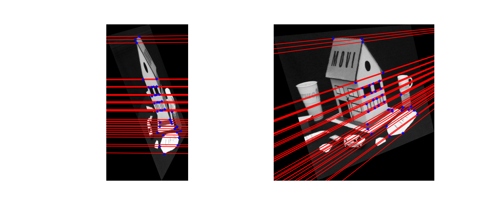
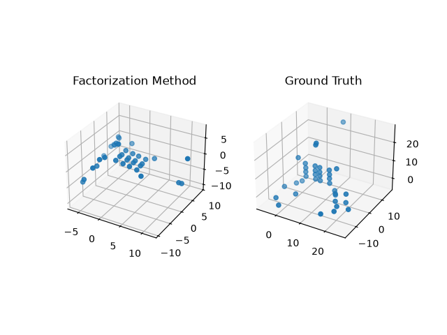
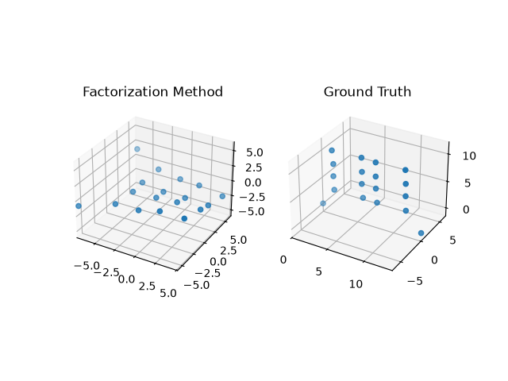
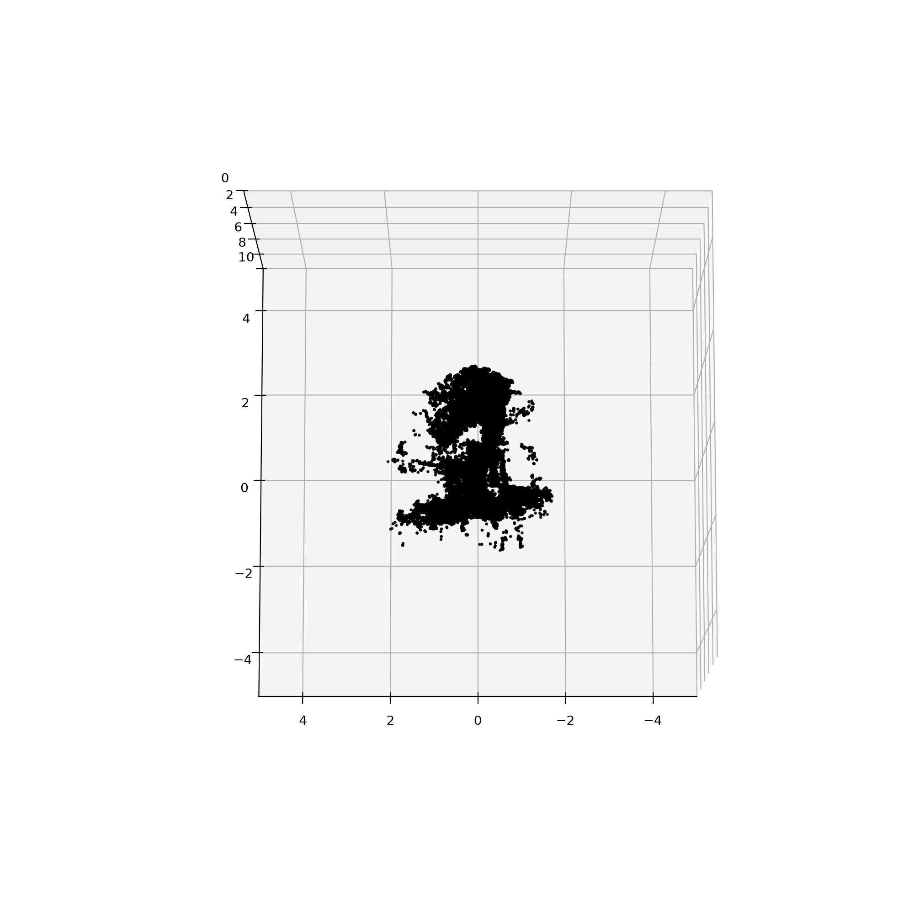

Arthur Kowara
Fundamental matrix from the linear least squares 8-point algorithm:
[[ 0.0000 -0.0000 -0.0035] [-0.0000 -0.0000 0.0141] [-0.0015 -0.0114 0.9998]]
The algorithm includes:
Fundamental matrix from the normalized 8-point algorithm:
[[ 0.0001 -0.0007 -0.1353] [-0.0007 -0.0000 1.3059] [ 0.0139 -0.7129 1.0000]]
The epipolar lines were calculated using the transpose of the dot product of the F matrix transposed and the points on the second image transposed. Each line is the projection onto the first image of the ray cast from the second camera’s center through the corresponding point in the second image.
The distance was calculated using the point-to-line distance formula,
d = |ax + by + c| / √(a² + b²), where x and y are the matching points in the first image. The
numerator is the absolute value of the dot product of the line and the point, and dividing it by the denominator
results in a distance in pixels.
Rectification works so well because it warps both images, making their epipolar lines horizontal and parallel, which leads to matching epipolar lines being on the same row for both images. This is because a point’s match must be on its epipolar line, and after rectification the match for that point is somewhere on the same row in the second image. This reduces the search from a 2D search to a 1D search, which is much faster and less prone to false matches. The remaining unknown is the disparity between images, which is inversely proportional to depth.

This happens because the reconstruction is only determined up to an affine transformation. For any invertible 3 × 3 matrix A, (MA)(A−1S) = MS. Therefore the recovered structure appears similar to the ground truth, but it is rotated and scaled.

[959.5852 540.4761 184.4317 27.9152]
There are 4 singular values because D is built from 2 rows per image and 2 images (2 × 2), so at most it has four singular values, and the data does not perfectly fit the rank-3 model. In the ideal case with noise-free measurements, there would be 3 non-zero singular values. After centering each 3D point, it would be a linear projection where D = MS, where M is a 4 × 3 matrix and S is a 3 × N matrix. This would result in D being rank three because S has only 3 rows, and the fourth singular value would be 0.
Comparing the results from the subset of the original correspondences to the ground truth, there are some similarities from different angles, but overall something seems off between the two. Unlike the last part, the similarities don’t typically appear at first glance. This happens because the factorization method depends on the D matrix being close to rank 3, meaning that the top three singular vectors capture most of the true 3D structure while the rest is just noise. This is an assumption the method makes in order to work properly, and the following disturbs this assumption in the subset:

[264.544 210.0607 7.2192 5.1286]
As mentioned in the last section, the difference between the third and fourth values is much smaller, which leads to noise having more of an influence on the depth. With the full set of points the third singular value was about 6.6 times bigger than the fourth, and for the subset it is only about 1.4 times bigger. This shows that the third dimension is barely distinguishable from the noise.
Also, each value is significantly smaller, which is expected because singular values represent the spread of the measurements, and fewer measurements often means less spread. The small difference between the third and fourth values means that the measurements are closer to rank two than three, mostly differing in only two directions. This suggests that the points lie close to a plane or have little depth, which is what leads to the reconstruction looking reasonable from some viewpoints but clearly wrong when rotated.

Reconstructing larger scenes, such as a house, is much harder for multiple reasons: